High-security signing
Made QES self-serve: setup went from a day with support to 15 minutes.
1 day with support became 15 minutes, self-serve
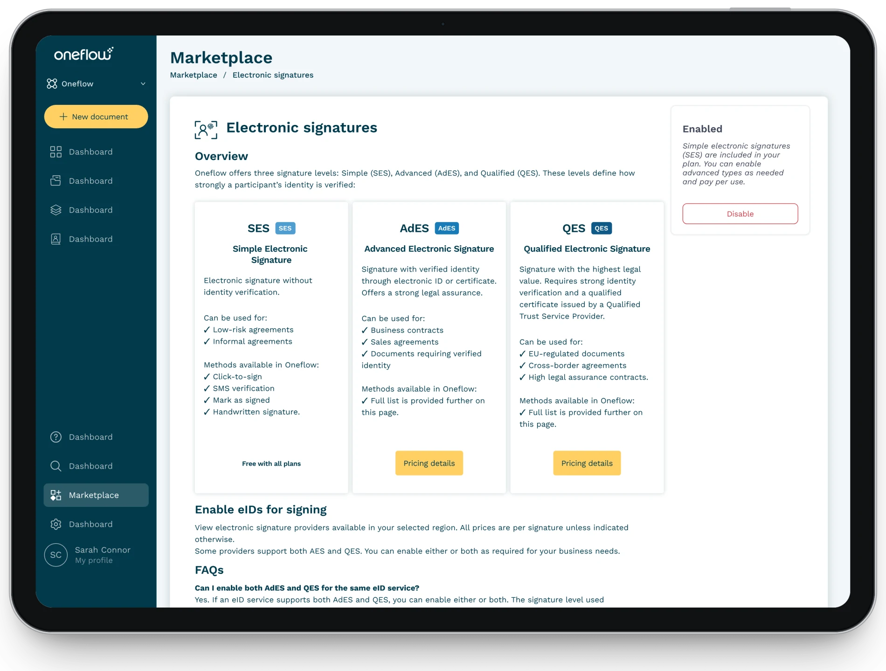
- Domain
- Secure contract signing
- Timeline
- Q2 2025
- Role
- Lead designer
- Team
 Olha and 4 others
Olha and 4 others
On this pageContext
Context
Oneflow offered QES, but only support could switch it on.
Oneflow is a contract management platform for B2B teams. Most users never found its most secure signature option, QES. The only way to enable it was a support ticket.
Problem
Research
- Analyzed 30+ support tickets
- Interviewed 12 internal stakeholders
- Mapped signing flows for 2 key user personas
Root causes
- QES was not discoverable (disabled toggle + no in-product indicators)
- Users didn't understand signature levels (AdES vs QES vs simple signatures)
Adoption gap
I didn't even know QES was an option here.
User quoteResults and impact
Setup time cut
From a day with support to 15 minutes, self-serve
Support tickets
Fewer tickets: users understood what they were signing
Backend performance
Simplified logic, about a second faster per response
Working with constraints
No single list of providers possible
Expected
One list for every signature provider
The backend kept stand-alone eIDs and the E-ID Hub apart, so merging them wasn’t technically possible.
Delivered
An eID hub on the existing backend
Providers grouped by signature level, with AdES and QES toggles, a country filter and prices per signature.
What was at stake
A backend rebuild before anything shipped, or more lost QES upsells and compliance risk for enterprise accounts.
My approach
- 01Marketplace IA redesignRedesigned marketplace IA to surface QES prominently
- 02QES setup flow redesignDocument and template setup redesign
- 03ValidationRan 3 testing rounds with enterprise users
- 04Design systemExtended design system with selection patterns
Challenges and fixes
Why did 85% miss our most secure signature option? I traced it to three issues, each blocking a different step on the way to QES.
Issue
QES hidden in the marketplace
Users scanned the Electronic IDs page and found only provider names: no signature levels, no legal guidance, no prices.
85%of users missed QES
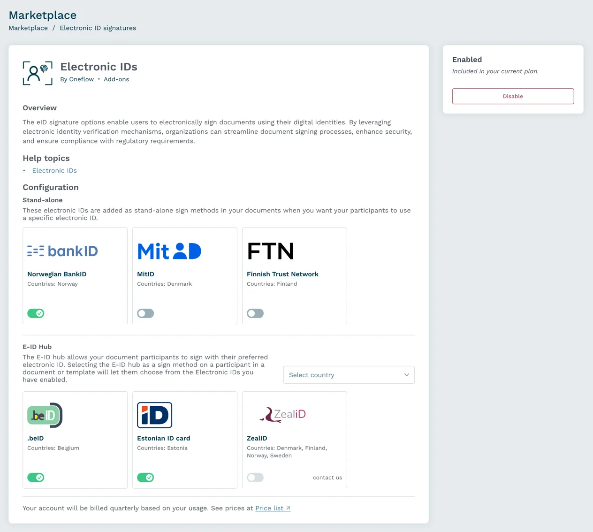
Fix
Signature levels and pricing
I rebuilt the marketplace around what users actually needed: “Electronic signatures” with clear security levels, SES for simple documents, AdES for business, QES for legal protection, and the price per signature next to every provider.
96%less setup timeFrom a day with support to 15 minutes, self-serve.
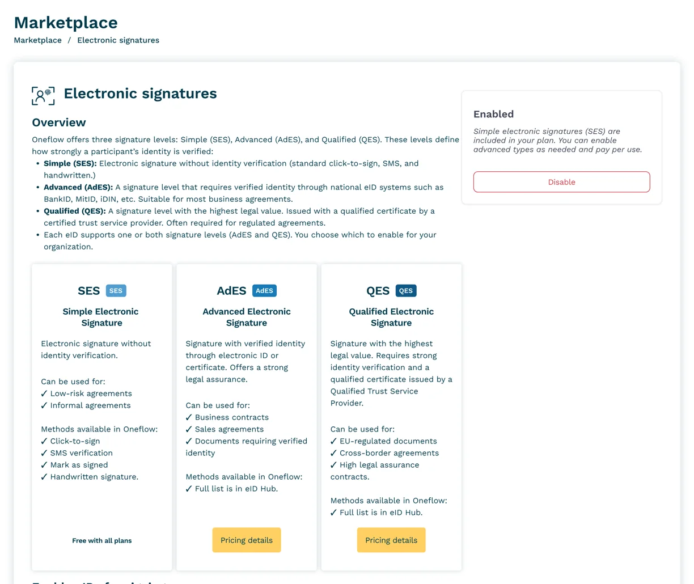
Issue
Confusing contract template setup
Users were confused by the “Signature mode” concept and the “Basic” option that included both Advanced and Simple signatures. Many called support, worried that their signature might not be valid.
30%more support tickets, with users questioning signature validity
Why does my BankID end up under Basic? Is it no longer legally valid?
Customer in a support call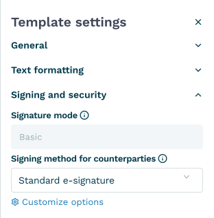
Fix
Signing method, where users already look
I asked users where they would set up secure signatures, and all of them went to Signing method. So the levels moved there, grouped into simple and eID signatures, and Signature mode went away.
8/8users looked under Signing method firstReusing an existing mental model beat adding a new setting.
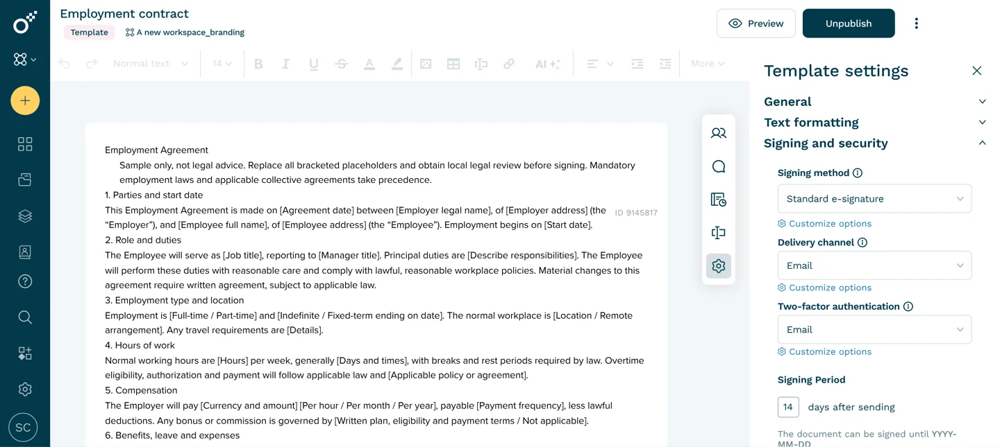
Template settings
General
Text formatting
Signing and security
Signing method
Customize options
Signatory chooses eID during signing
Delivery channel
Customize options
Two-factor authentication
Customize options
Signing Period
14
days after sending
The document can be signed until YYYY-MM-DD
How I tested it
Signature level used to live in its own Signature mode setting, where “Basic” quietly covered both simple and Advanced signatures, and “Qualified” was the only way to QES. I tested three ways to fold the level into Signing method instead:
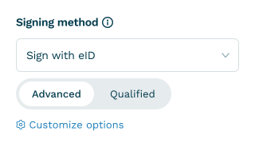
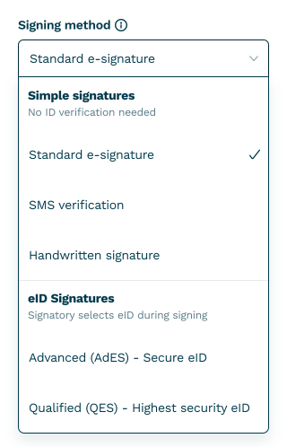
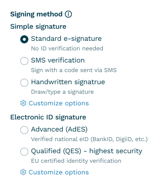
Issue
A tangled backend
Behind Signature mode, the backend crossed feature flags, contract type, signature mode, qualified flags and display modes in one condition matrix, and every check slowed the settings down.
60+conditional checks
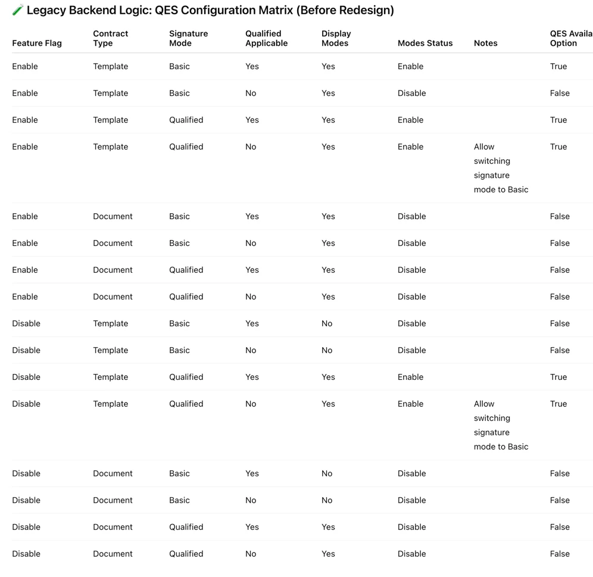
Fix
Four rules
The real breakthrough wasn’t visual, it was simplifying the logic. With engineers, I cut 60+ checks down to four; the main one: a signature type appears in the dropdown when it’s enabled in the marketplace.
90%faster backendAbout a second faster per response. A win for users and engineers.
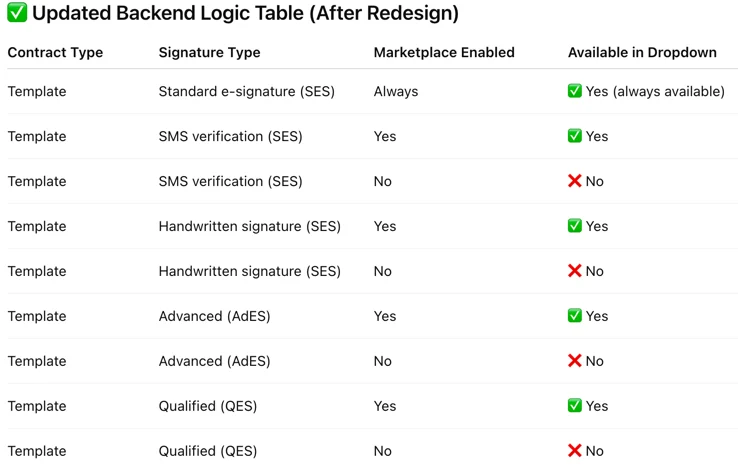
The final design
The original Electronic IDs page next to the redesigned Electronic signatures page, with the same six providers on both.
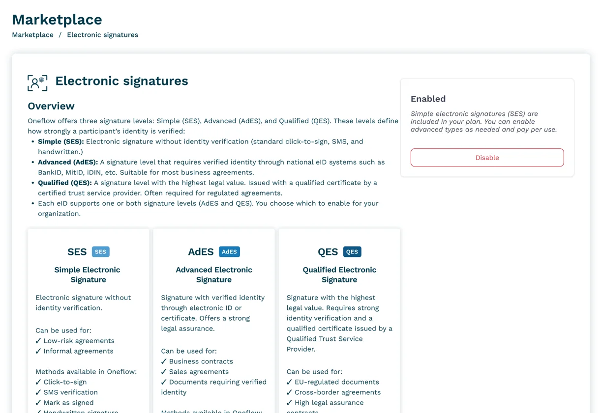
Design system
Extended components for marketplace toggles, the country filter, the pricing card and system messages.
Foundations
Inputs and actions
 All countries and regionsAll countries and regions
All countries and regionsAll countries and regions
 EU/EEA
EU/EEA Belgium
Belgium Estonia
EstoniaPatterns
Enabling QES may result in additional costs per signature, based on provider terms. Please review provider pricing details before activation.

 Mobile-ID
Countries: Estonia
AdESSEK 3
Mobile-ID
Countries: Estonia
AdESSEK 3
 QESSEK 35
QESSEK 35
Qualified Electronic
Signature
Signature with the highest
legal value. Requires strong
identity verification and a
qualified certificate issued by a
Qualified Trust Service
Provider.
Can be used for:
EU-regulated documents
Cross-border agreements
High legal assurance
contracts.
Methods available in Oneflow:
Full list is in eID Hub.
Learnings and reflections
Didn't work
- Combining all providers into one list wasn't technically possible due to backend constraints
Surprised me
- Pricing transparency increased conversion
- Backend simplification (60→4 checks) was possible
Would do differently
- Test terminology with non-technical users earlier
- Involve CSM in initial research
- Push for backend unification sooner